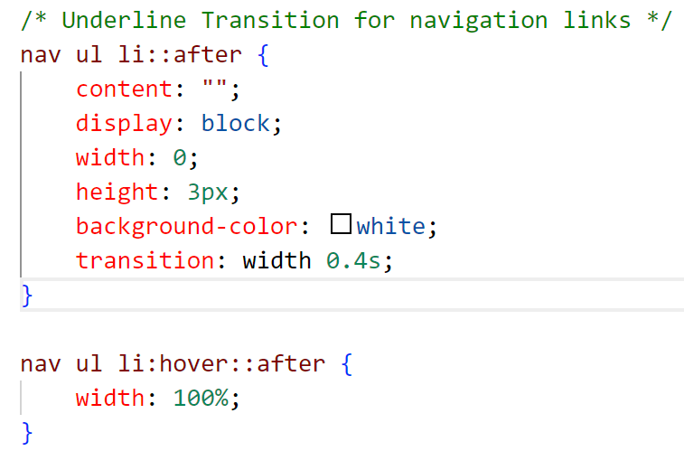
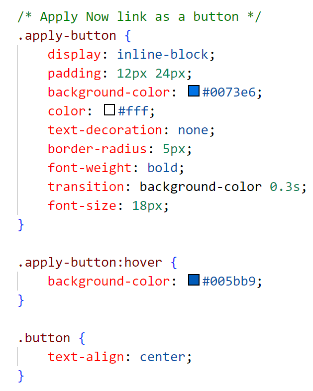
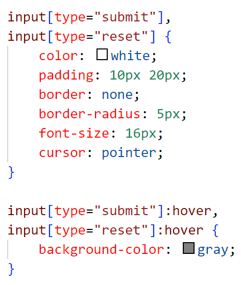
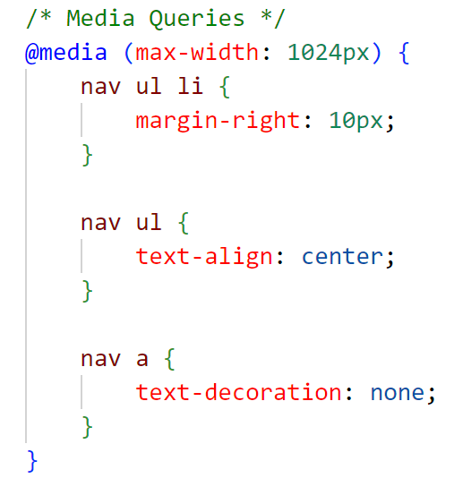

Beyond the basic requirements, we have implemented the following enhancements:
First, we add a transition to the navigation bar. When the mouse hovers over the navigation bar, a transition effect will be applied to the navigation bar.
The transition effect is that a white line under the navigation bar will run from left to right, indicating where the mouse hovers over.
The transition effect is implemented by adding a transition property to the navbar class in the style.css file.
The transition property specifies the transition effect; the transition duration is 0.4 seconds.
This transition applies to our whole website.
This is our reference to make that underline-hover effect:
Underline-HoverSecond, we add an effect when you hover over the submit and reset buttons on the apply and jobs pages.
When the mouse hovers over the submit, reset, and 'apply now' buttons, the button will change to a darker color.
The effect is implemented by adding a hover property to the buttons in the style.css file.
 This is our reference for making that button-hover effect:
Button-HoverThird, we add a media query to the website.
When the screen size is smaller than 1024 px, the navigation bar will be aligned to the center, and the margin will be changed.
The media query is implemented by adding a media query property to the navbar class in the style.css file.
This is our reference to make that media-query effect:
Media-Query